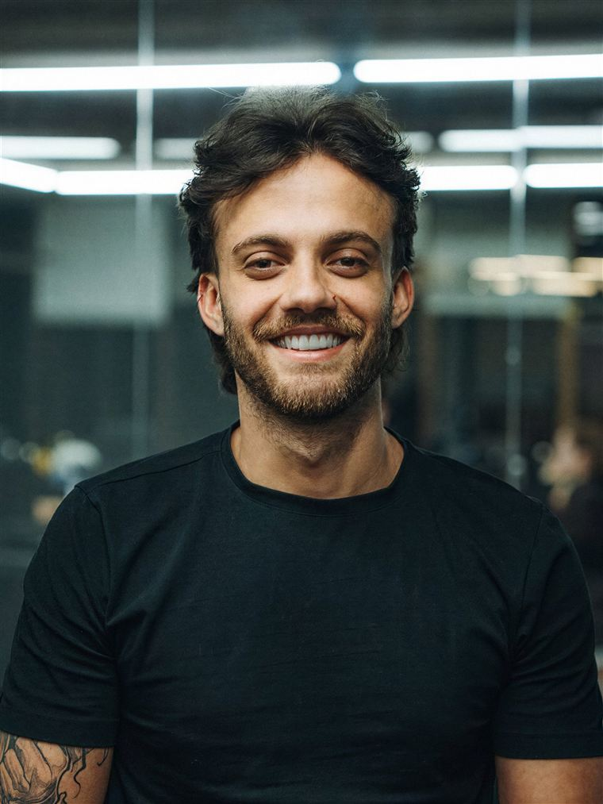

Nove anos de código. Um laboratório próprio.
GaspLab@gasplab
Você escolheu a direção B, Uniforme, com a etiqueta de amostra da Bancada nas prévias e propostas, e aprovou as cinco peças abaixo em 21/10. Os textos seguem como rascunho, e a logo continua a atual, com o quadrado em cobre, até as suas respostas.
Todas usam o mesmo sistema: cinza de tênis, preto de camiseta, azul de jeans, a costura em cobre e a etiqueta de amostra. Nomes de clientes e restaurantes são fictícios.
Fala com as duas pontas da escada: a prévia para quem chega pelo site e o projeto para a empresa. A etiqueta presa na foto mostra o método, e a costura emoldura o retrato.
Laboratório de soluções digitais · São Paulo
Você vê funcionando antes de decidir.
Do primeiro site à inteligência artificial na operação da sua empresa, cada solução passa pela bancada antes de chegar até você.
Na entrada, a prévia chega antes de qualquer pagamento.

Testado por Vinícius Gasparello
Laboratório de soluções digitais
Você vê funcionando antes de decidir.
Do primeiro site à IA na operação da sua empresa.
Quero uma prévia Tenho um projeto para a empresaTestado por Vinícius
O post apresenta você no feed. O story mostra o bastidor: uma prévia sendo testada, com a etiqueta marcando cada teste.
Nove anos de código. Um laboratório próprio.
Bastidor do laboratório
Primeiro a prévia. Depois a decisão.
Peça a sua no directA costura vira a lateral da página, como a de um jeans. A etiqueta diz o tipo e a versão do documento, e o responsável técnico assina.
ParaEmpresa Exemplo Ltda.
Atendimento e pedidos no WhatsApp, ligados ao sistema da empresa.
Escopo, etapas e investimento.
A faixa no topo de toda prévia diz quem fez, a versão e que nada foi publicado. O cartão aparece quando o link é enviado no WhatsApp. A identidade do restaurante continua sendo dele.
Massas da casa, feitas todo dia. Peça pelo WhatsApp e retire no balcão.
Sua prévia está pronta.
A ferramenta interna também veste a marca: painel em jeans cru com o traço fino, formulário em sola clara e foco em cobre.
GaspLab Hub · uso interno
Operação comercial
Entre na operação.
Use o acesso enviado pelo administrador da GaspLab.
Primeiro acesso? O link chega por e-mail.
O que as cinco peças usam. No G2 cada item ganha regras completas e arquivos prontos.
#141416Texto, logo e traço fino#1F2D52Fundos escuros, duotom e botão principal#5A76A8Apoio, gráficos e estado de sucesso#E2E3E1Fundo principal#F4F4F2Cartões, formulários, etiquetas e propostas#A8AEB6Linhas e texto de apoio sobre o jeans#A96A28Costura e rebite sobre fundo claro; nunca em texto#C8883BCostura e rebite sobre o jeans#B4432FErros e alertas; o sistema não usa verdeVocê vê funcionando antes de decidir.
Do primeiro site à inteligência artificial na operação da sua empresa, cada solução passa pela bancada antes de chegar até você.
Amostra · Prévia · v0.3 · testado por Vinícius
Linha tracejada em cobre. Uma por peça: na moldura da foto, na borda do cartão ou na lateral da proposta.
O quadrado da logo, em cobre. Vira marcador de lista, ponto de status e o canto da etiqueta.
Ilustração em linha fina preta, com pontilhado, como a sua tatuagem. Nenhum ícone de banco.
Retrato institucional com sombras em jeans cru e luz em branco. Mesmo tratamento em todo retrato oficial.
Toda prévia e proposta leva o tipo, a versão, o que foi testado e quem testou.
Foto de bastidor em cor natural, com grão leve. Fotos suas e da equipe, nunca de banco de imagem.
É a logo atual, com o G em preto e o quadrado em cobre. A costura escureceu um tom sobre o cinza para o quadrado ter contraste de pelo menos 3:1; no v2 ele quase sumia no fundo claro. Refinar ou redesenhar depende da sua resposta 3.
Hoje as peças usam o único retrato em alta que existe. Para o G2, celular serve, de preferência com luz natural e as roupas de sempre.
Cada etapa termina com algo para você ver e aprovar antes da próxima.
B, Uniforme, como base, com a etiqueta de amostra da Bancada nas prévias e propostas. As direções A e C ficam no histórico de versões desta página.
Topo do site, post e story, capa de proposta, moldura da prévia e login do Hub.
Começa quando chegarem as suas respostas e as fotos. Logo final, regras de cada elemento, ilustrações e o avatar do Vini em traço fino, voz com exemplos para cada nível de cliente, templates editáveis e um único arquivo de cores e fontes para o site, o Hub e as prévias.
Site, Hub, templates de Instagram, propostas e prévias, com checagem de fatos antes de publicar.
Pode responder pelo número, em texto ou áudio.
Escrita a partir dos fatos abaixo. A história ainda precisa das suas palavras.
Você vê funcionando antes de decidir.
Descritor: laboratório de soluções digitais.
Empresários de todos os níveis. A marca precisa servir a quem compra o primeiro site e a quem contrata IA para a operação.
Gasp, de Gasparello. Lab, de laboratório: o lugar onde a solução é testada antes de chegar ao cliente.
Em inglês, gasp é o suspiro de surpresa. Pode virar o momento em que a prévia abre e funciona. Só entra se você gostar.
Em 2021, o Vinícius abriu a Gasp Development para desenvolver software. Em 2025, a empresa virou GaspLab, porque o trabalho tinha virado laboratório: montar, testar, mostrar funcionando e só então seguir. Por trás estão nove anos de código e uma equipe pequena que cuida de engenharia, prévias e atendimento.
| Traço | Como aparece | O que evitar |
|---|---|---|
| Mão na massa | Mostra a prévia antes de prometer | Apresentação cheia de slide e pouca entrega |
| Curiosa | Testa, versiona e conta o que aprendeu | Experimento que nunca vira produto |
| Calma e direta | Explica sem jargão, no ritmo do cliente | Tom frio de manual técnico |
| Gente de verdade | Rosto, estilo e rotina de quem faz | Foto de banco de imagem e “nosso time” sem rosto |
Calma, técnica sem jargão, confiante sem exagero, atenta e leve. Esses cinco traços já guiam o avatar e passam a valer para tudo.
Quem fala: no site e nas propostas, a GaspLab fala como “a gente”. Nos seus perfis, você fala em primeira pessoa.
Engenharia para a IA funcionar no seu negócio.
A gente monta a prévia do seu cardápio. Você testa no celular e decide.
Antes de automatizar, a gente entende como a sua operação funciona e mostra, na prática, onde a IA ajuda.
A base de tudo acima. Cada item traz a fonte, e o que precisa da sua confirmação está marcado.
A Gasp Development abriu o CNPJ em 2021. Em 2025 virou GaspLab, um laboratório de soluções digitais.
Site e Bio + Catálogo são a porta de entrada. Dali a GaspLab segue com software, automação e IA para empresas de qualquer porte.
Na porta de entrada, a GaspLab monta a prévia funcionando e só depois o cliente decide. É o laboratório na prática.
Desde 2017: analista de sistemas, full stack, tech lead e engenheiro de IA, liderando times em operações grandes.
Camiseta preta, jeans escuro largo, tênis cinza e branco, argolas prateadas, tatuagem preto e cinza no braço direito e um sorriso largo.
Academia, noite de festival com estruturas de luz, streetwear e momentos em casa.
Azul é a sua favorita. Verde foi recusado.
Nada de número sem fonte, depoimento inventado ou promessa de resultado. É raro num mercado que vive de promessa.
O diagnóstico do brand book v2 que levou à direção atual.
A página de cores dizia que a fonte da verdade era o CSS. O azul entrou no código às 02:08 de 25/09 e o brand book saiu às 02:30, sem pesquisa, público nem história.
PDF p.8 · histórico do git
17 das 19 cores ficavam na mesma faixa de azul. Fundo quase preto, azul elétrico, ciano, brilho e grade é a combinação da maioria dos sites de IA.
PDF p.8–9 · app/globals.css
Space Grotesk com IBM Plex Mono é o par mais comum em produto de IA. O logotipo era o nome digitado nessa fonte.
PDF p.10–11 · app/layout.tsx
O v2 só tratava da sprint de arquitetura de IA. A porta de entrada, com a prévia antes do pagamento, não aparecia, e quem chega por ela não se reconhecia na marca.
PDF p.5 · briefing de 01/10 · você, 21/10
“Engenharia para a IA funcionar no seu negócio” e o método em cinco verbos servem para qualquer consultoria.
PDF p.2–4 · lib/content.ts
A página de fotografia estava vazia. Não havia retrato, primeira pessoa, origem do nome nem data de fundação.
PDF p.14–15